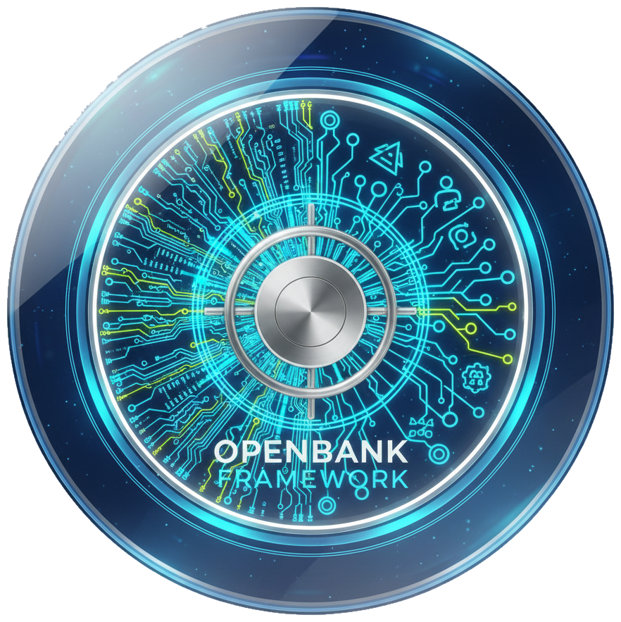
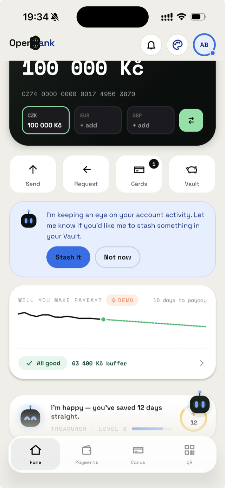

⬡
Microservices & hexagonal
~37 banking microservices with a strict hexagonal architecture, all deployed to the AWS sandbox. A domain layer with zero framework imports: portable, testable, boring on purpose.

Open Bank FoundationBanks became software houses. The hard patterns are microservices, multi-cloud and AI between us. They're already known and re-solved behind every closed wall. It's time to share the common core in the open, the way it makes sense for everyone. It already runs: a ~37-service reference bank in a live AWS sandbox, with an AI agent fleet and a customer app on the same open core.
The Open Bank Foundation doesn't exist yet. This page is a proposal, a vision I'm putting out to find people who want to help co-found it.
Every modern bank runs hundreds of engineers solving the same problems: ledgers, payments rails, SEPA, sanctions screening, idempotency, audit, outbox, multi-currency. The architecture is no longer a secret. The patterns are known.
Yet each one re-implements the undifferentiated core behind a closed wall, at full cost, with full risk. That made sense when software was the moat. In the AI era, the moat is your product and your customers, not your outbox table.
The Open Bank Foundation is the proposal: a place to share what is common to all of us: a banking-grade, opinionated, production-shaped framework that any bank can adopt, audit, and contribute back to. Open the floor that everyone keeps rebuilding, and compete where it actually matters.
A reference implementation of how a bank is actually built. Not slideware, but running services, contracts and gates.
~37 banking microservices with a strict hexagonal architecture, all deployed to the AWS sandbox. A domain layer with zero framework imports: portable, testable, boring on purpose.
Cloud-agnostic by design: stateful concerns run as in-cluster OSS, provisioned with OpenTofu and reconciled by GitOps. No lock-in, any region.
AI between us, not bolted on. A fleet of policy-gated agents (FinOps, DevOps, governance, release, docs), a deployed customer-facing LLM copilot, human-in-the-loop controls and AI-attributed audit. All first-class, all deny-by-default.
Outbox, idempotency, versioned backward-compatible events, and Temporal durable workflows for the flows that must not lose their place. The money-path primitives every bank needs and nobody should write twice.
Versioning, releases, contracts and a service catalog derived from the code and enforced in CI. Compliance you can diff, not a binder on a shelf.
Zero-trust authz, threat models for money-path services, sanctions screening and audit trails: the regulated parts, shared and reviewed in the open.
A money-path that thousands of people review is harder to break than one every bank hides and hopes about. And once the boring core is shared, nobody pays full price to rebuild the same ledger, outbox and SEPA plumbing again; that budget goes to customers instead.
Shared patterns also give engineers, auditors and regulators one vocabulary across institutions. And in the AI era a well-shaped, documented codebase is exactly the substrate agents build on, so opening the substrate multiplies everyone's leverage.
The framework ships as a running European bank: governance mapped to the regulation, the real cost of every business process, continuity, AI governance and live cloud architecture. All observable, in real time, and the whole thing is public on GitHub under Apache-2.0.
Every control traced to a named article: DORA, PSD2, GDPR, PCI DSS, 5AMLD, CNB, EBA, eIDAS 2.0, EU AI Act.
See the coverage map →Run-cost attributed to the business flow that spends it, fully-loaded, this month.
See the cost breakdown →Recovery tiers with live health and RTO/RPO per DORA Art.11-12 and CNB §20d.
See the recovery plan →Agents under the same gates as humans: read / propose / deny tiers, deny-by-default.
See the AI posture →Target state with a live health overlay from the running EKS sandbox cluster.
See the live map →The full monorepo, ~37 services, ADRs and governance-as-code, public on GitHub under Apache-2.0. Clone it, audit it, fork it.
github.com/JiRaska/open-bank-oss →Five live surfaces, one running bank.
Open the deep dive →A cross-platform retail banking app on the same open core: Kotlin Multiplatform + Compose, one codebase for iOS and Android. It talks to the live customer edge already: accounts, balances, transaction history, notifications and profile from real data.

Home screen · balance, AI assistant & payday predictorHome, balances, history, notifications and profile render from the running customer edge, not from fakes. Login is a real Authorization-Code + PKCE flow against a dedicated openbank-customers Keycloak realm, with proactive token refresh.
Payments are approved by biometrics and signed by an on-device key: Secure Enclave on iOS, StrongBox/TEE Keystore on Android, with PSD2 RTS Art.5 dynamic linking. Tokens live in the Keychain or AndroidKeyStore, TLS is SPKI-pinned, and PII is stripped on the device before any diagnostics ever leave the phone.
Drop the Apple ID email your TestFlight uses and we'll send an invite. That's the only thing we ask for.
No account, no card, no tracking. Your email is used only to send the TestFlight invite, with your explicit consent, and deleted when the beta ends. What exactly we collect ↓
The Open Bank Foundation doesn't exist yet. This is the call to start it. If you build, run, audit or regulate banking software, and you believe the common core belongs in the open, I'd love to talk about co-founding it together. The code is already out there, public on GitHub under Apache-2.0.